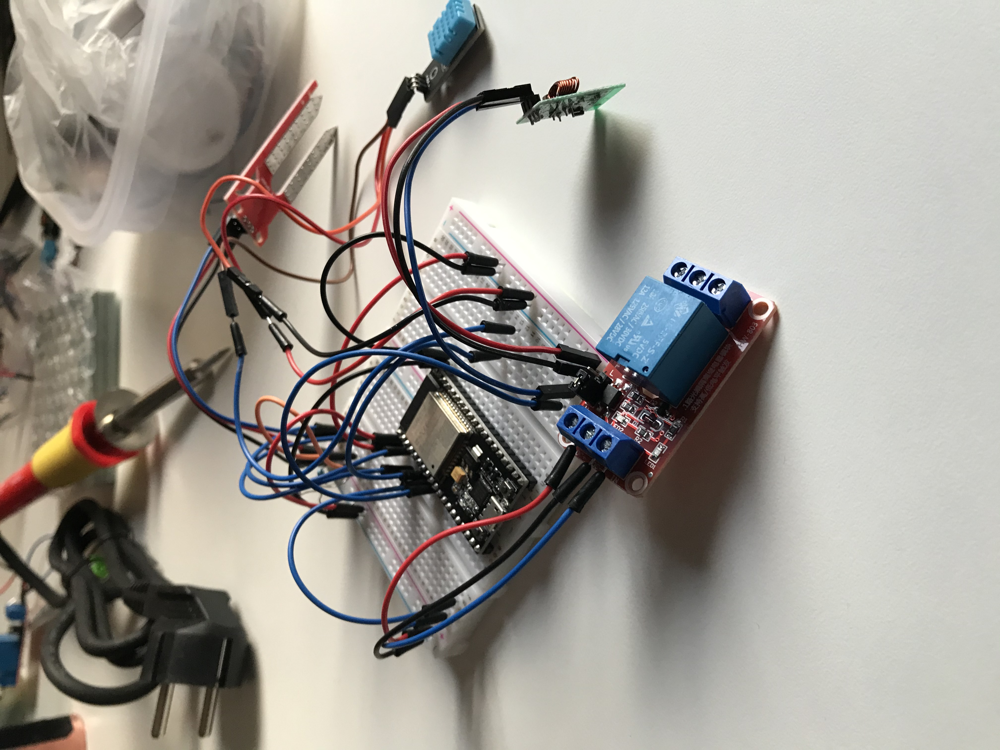
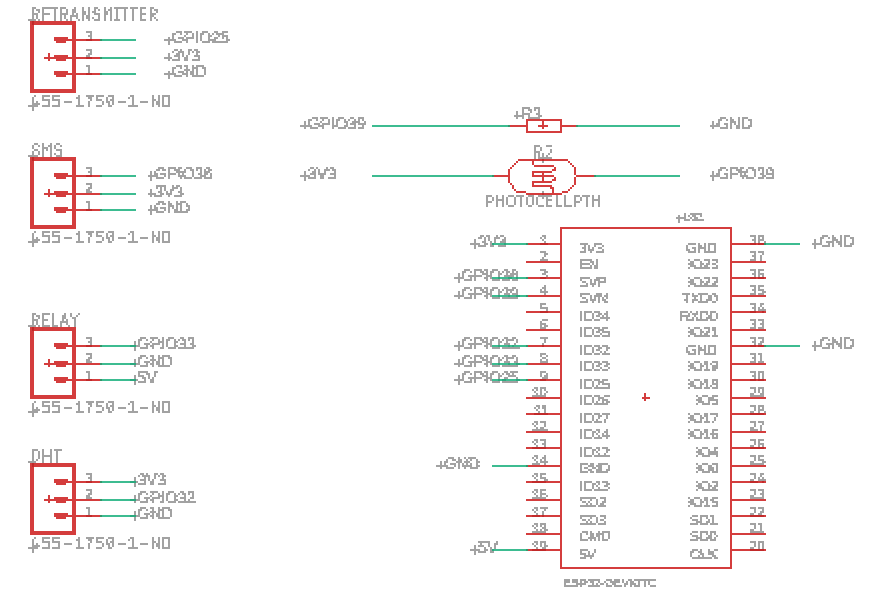
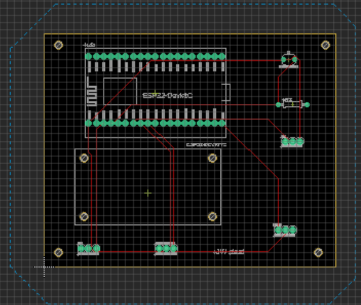
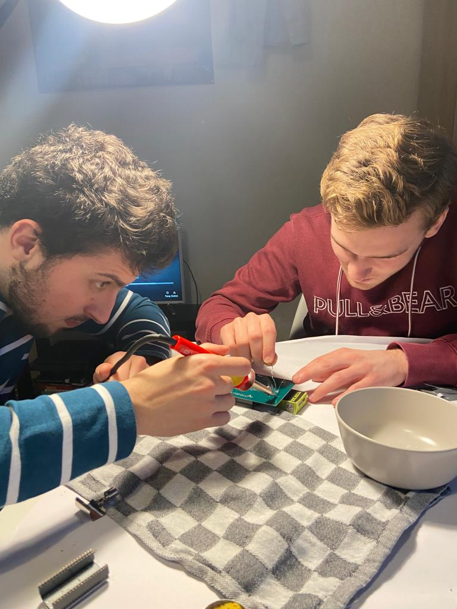
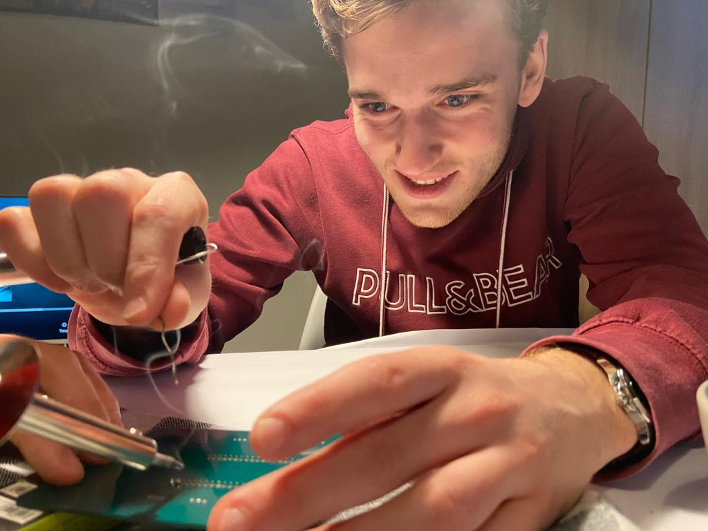
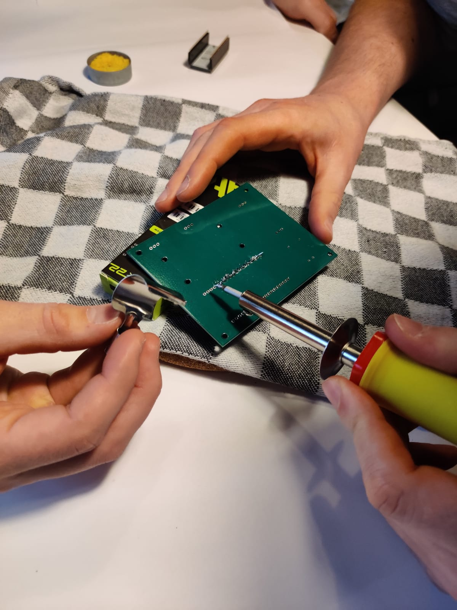

Uitleg
Om mijn eigen plantsysteem te maken ben ik begonnen om de losse onderdelen op een breadboard te zetten. De volgende onderdelen kwamen op het breadboard:
In figuur 1 is mijn breadboard met aangesloten onderdelen te zien.

Figuur 1. Breadboard
Terwijl ik bezig was met de onderdelen op mijn breadboard te zetten werkte ik ook aan de code om de sensoren aan te sturen. Om dit te doen heb ik gebruik gemaakt van Visual Studio Code in combinatie met PlatformIO.
Nadat het gehele systeem goed werkte op mijn breadboard mochten we een printplaat (PCB) ontwerpen zodat er minder draadjes nodig waren en het er ook mooier uit ziet. Om dit te ontwerpen hebben we gebruik gemaakt van EAGLE. Voor het ontwerp hebben we een schematic en een board gemaakt. De ontwerpen hiervan zijn te vinden in figuur 2 & 3.

Figuur 2. Shematic

Figuur 3. Board
Nadat de ontwerpen opgestuurd zijn naar China en waren geproduceerd kregen we ze thuis opgestuurd. Nadat de PCB's thuis waren geleverd heb ik samen met Nick van Oostrum en Luuk van der Voort alle onderdelen op het PCB gesoldeerd. Een paar impressie foto's zijn hieronder te vinden.



Demonstratie